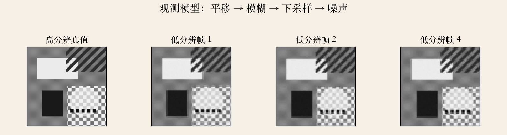
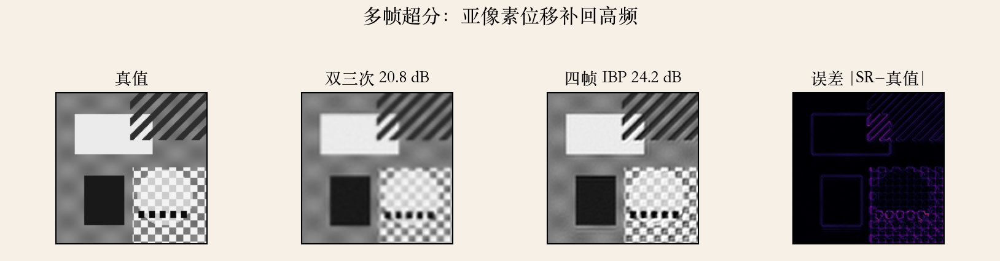
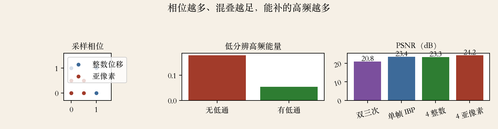

开场 · 超分辨率
超分：补回空间分辨率
- 最常见做法是多张输入图对齐后合成更高分辨率的图。
- 书上第 637 页说，也有单图超分方法。
- 单图超分和去模糊密切相关。
- 超分的超指空间分辨率，不是把图变亮。
依据：原书第 637 页
两条路
多帧：采样相位不同，补回高频
单图：没有新信息，只能靠先验或学习
多帧靠补，单图靠猜
观测模型 · 第 637 页
观测模型：平移、模糊、下采样
- 低分辨图 o_k = D(b ∗ s(h_k)) + n_k。
- 顺序是平移、模糊、下采样，最后加噪声。
- 模糊核可能是镜头 PSF、运动模糊或像素面积积分。
- o_k 是低分辨，s 是高分辨。
依据：原书第 637 页式 10.25
各项含义
D：下采样
b：模糊核；h_k：第 k 帧平移
n_k：噪声，通常假设零均值
反演 · 最小二乘
反演：一个大稀疏最小二乘
- 对所有帧求观测减低分辨模拟的平方和。
- 未知数是高分辨图 s。
- D、b、h 已知时，这是线性最小二乘。
- 未知数几十万到几百万，矩阵大而稀疏。
依据：原书第 637 页式 10.26
求解与边界
直接解不现实
用迭代法或频域方法
重投影一致，不保证自然
实验一 · 观测模型
看图：四帧差在采样相位
- 四帧都模糊，但采样相位错开。
- 低分辨帧来自高分辨真值。
- 对齐后才有互补信息。
- 这一步决定后面能不能补高频。
依据：本集实验

观测模型：平移 → 模糊 → 下采样 → 噪声 | 低分辨帧来自高分辨真值｜程序生成，未用教材或论文原图
模糊核 · 第 638 页
模糊核估错，超分越做越糊
- 书上第 638 页说，b_k 可以从成像知识推断。
- 也可以用测试图或观测图标定。
- 核和高分辨图都未知，就是盲反卷积。
- PSF 可能空间不变，也可能空间变化。
依据：原书第 638 页
核与标定
运动、离焦、传感器光学
边缘结构或稀疏先验打破循环
广角、大光圈要分块估核
求解 · 第 638 页
求解：共轭梯度与迭代反投影
- 书上第 638 页把最小二乘写成大稀疏矩阵。
- 可以用预处理共轭梯度。
- 更早的 Irani–Peleg 方法用普通梯度下降，也就是 IBP。
- IBP 把当前高分辨图模拟成低分辨，再反投影误差。
依据：原书第 638 页
IBP 的注意事项
步长太大发散，太小收敛慢
实际还要加平滑或约束
多轮迭代才稳
混叠 · 第 638 页
混叠：可恢复高频的来源
- 书上第 638 页说，模糊越少、混叠越多，可恢复的高频越多。
- 最大似然没有图像先验，会把高频噪声放大。
- 没有混叠、没有新采样，信息就是没有。
- 硬解只会得到振铃或噪点。
依据：原书第 638 页
混叠
混叠来自采样率不足
它带着高频的影子
先问有没有可恢复的混叠
实验二 · 多帧重建
看图：误差补回高频
- 双三次 20.8 dB，四帧 IBP 24.2 dB。
- 双三次边缘发软。
- 四帧 IBP 更锐。
- 误差集中在边缘和纹理。
依据：本集实验

多帧超分：双三次 20.8 dB 对四帧 IBP 24.2 dB | 右为误差图｜程序生成，未用教材或论文原图
先验 · 第 638–639 页
先验：用假设换稳定
- 书上第 638–639 页说，经典超分要加图像先验。
- 最简单是对图像导数加二次惩罚。
- 二次惩罚等价于 Tikhonov 正则。
- 它得到高斯马尔可夫随机场（GMRF）。
依据：原书第 638–639 页
λ 的取舍
假设：相邻像素应该接近
λ 太大图糊，太小噪声回来
二次惩罚会让边缘变软
鲁棒先验与示例学习
鲁棒先验与示例学习
- 书上第 639–640 页说，稀疏/鲁棒导数先验能减振铃、增边缘锐度。
- 它不能凭空造出高频纹理。
- 示例学习用训练图学低分辨块到缺失高频的映射。
- 并用 MRF 或置信传播保证重叠块一致。
依据：原书第 639–640 页
示例学习
它是合理猜测
人脸、文字这类强结构可能很惊艳
训练集决定它能编什么
实验三 · 采样相位与混叠
看图：相位越多，补得越多
- 整数位移 23.3 dB，亚像素 24.2 dB。
- 无前置低通的高频能量 0.179。
- 有低通时只剩 0.054。
- 相位越多、混叠越足，能补的高频越多。
依据：本集实验

采样相位 / 混叠 / PSNR：亚像素 24.2 对整数 23.3 dB｜程序生成，未用教材或论文原图
学习式 · 第 641 页
学习式：退化分布才是关键
- 书上第 641 页说，现在主流是用深度网络直接预测高分辨图。
- RealSR 用变焦镜头拍真实退化。NTIRE 挑战用它比较算法。
- 只用 bicubic 下采样训练，遇到真实退化常常失败。
- 真实退化包括噪声、模糊、压缩、去马赛克。
依据：原书第 641 页
退化建模
网络结构不是全部
训练退化分布决定上限
配对不准，网络会学错方向
手机相机 · 第 643 页
手机相机：联合处理更实用
- 书上第 643 页说，多帧超分可以直接做进手机相机。
- 还可以和去马赛克联合处理。
- 视频可以做时空超分。
- 手机夜景是多帧对齐、超分、去噪、去马赛克一起做。
依据：原书第 643 页
联合的代价
每一步误差会互相放大
联合处理让误差不来回传
功耗和延迟限制迭代次数
收束 · 下一集
收束：先对齐，再谈重建
- 做多帧超分，先把对齐做到亚像素。
- 没有混叠，就别指望补高频。
- 四帧平均把噪声降 49.2%。
- 模糊核偏大时掉到 20.5 dB。
依据：本集实验；原书第 637–643 页
三句话
超分 = 对齐多帧 + 反演观测模型
亚像素相位和混叠是高频来源
先验能补细节，不能造真相
模糊核、噪声、压缩，假设错会反噬